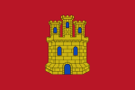

3 Recomendacións bibliográficas
TRABALLANDO NELA!
Un moi bo recurso para formarse é a lectura de obras de valor. Cando comezamos na militancia aparecen recorrentemente unha serie de dúbidas cunha orixe común; a ignorancia fronte á inmensidade do coñecemento humano. Algunhas das dúbidas máis frecuentes, coas que probablemente coincidas, son:
Como podo mellorar a miña formación?
En que obras debo centrarme?
Hai centos de obras, en que orde debo lelas?
Cómpre que lea todo o que me recomendan?
A resposta non é única e diferentes persoas podemos enfocala dende diferentes prismas, mais, nesta sección, ao final destes comentarios introdutorios vai unha serie de propostas para iniciar a lectura das principais fontes de información e documentos fundamentais á hora de militar.
Se ben hai algunhas destas preguntas presentan resposta directa: sen ir moi lonxe, á última descrita Cómpre que lea todo o que me recomendan?, a realidade é que non, non é preciso. Existen obras fundamentais que toda militante debería coñecer, mais non todas resultan prioritarias segundo o ámbito no que nos centremos; por exemplo, un ensaio sobre ecoloxismo non ten por que ser imprescindible para quen centra a súa militancia na defensa da lingua. Ademais, mesmo dentro dunha área temática, non fai falta abarcar toda a bibliografía existente; abonda con apoiarse nunha selección de obras de referencia que acheguen unha base sólida.
Ligando ao comentario sobre a autoría feito na sección Chapter 1, moitas destas obras non son accesibles de xeito gratuíto e universal. Existen diferentes estratexias para acceder a esta información; unha que adoita ser boa para as obras en galego é facer uso dunha biblioteca. Existen un par de bibliotecas en liña onde se poden: consultar libros en galego, GaliciaLe, e en castelán, eBiblio. Esta opción é moi recomendable para evitar desprazarse ás bibliotecas físicas e coller libros en préstamo. Cando estea dispoñible deste xeito, indicarase cunha icona dun libro ( ). Porén, nos casos nos que exista unha opción de accesiblilidade universal vai ser presentada cun cadeado aberto ( ) sobre o que se pode premer para acceder ao título.
Vivimos un momento histórico no que a nosa lingua está minorizada e o consumo de obras nela non é tan elevado como poden ser o portugués, o castelán ou o inglés. Como consecuencia, non todas as obras presentan unha versión en galego. Secasí, no caso de presentala, engadirase a icona dunha bandeira galega ( ), mentres que se non existe tal versión ligarase unha bandeira portuguesa ( ) (facendo referencia a que o texto está en portugués), unha bandeira castellana (

) (facendo referencia a que o texto está en castelán) ou unha bandeira inglesa ( ) (facendo referencia a que o texto está en inglés), dando prioridade ao portugués fronte ao castelán e a este fronte ao inglés, por cuestión de proximidade lingüística. Ademais, o título aparecerá na lingua que se indique coa bandeira.3.1 Literatura nacional
Economía
- O atraso económico da Galiza - Beiras Torrado, X. M. H. (1972) [Análise] ( ): [COMPLETAR]
Feminismo
Historia da Galiza
- Historia de Galicia - López Carreira, A. (2013) [Obra de referencia] ( ): [COMPLETAR]
Historia da lingua galega
A estrela que nos guía. O galego entre un pasado brillante e un incerto futuro - Freixeiro Mato, X. R. (2023) [Introdutoria] ( ): [COMPLETAR]
Como falar e escribir en galego con corrección e fluidez - Callón Torres, C. M. (2012) [Introdutoria] ( ): [COMPLETAR]
O libro negro da lingua galega - Callón Torres, C. M. (2022) [] ( | ): [COMPLETAR]
Sobre o racismo lingüístico - García Negro, M. P. (2009) [Ensaio] ( ): [COMPLETAR]
Nacionalismo galego
A memoria da nación - Nogueira Román, C. (2001) [Análise] ( ): [COMPLETAR]
Sempre en Galiza - Rodríguez Castelao, A. D. M. (1944) [Obra de referencia] ( ): É o libro fundacional do nacionalismo galego contemporáneo, escrito como ensaio. Publicouse na Arxentina mentres Castelao se atopaba exiliado por mor da ditadura franquista. Presenta un limiar, Adro, de 14 capítulos que escribiu mentres estaba en Badaxoz (Badajoz). Posteriormente escribiu catro libros: o primeiro escrito durante a guerra civil española entre 1937 e 1938; o segundo escrito en 1940 en Nova Iorque (New York) e rematado na viaxe cara a Buenos Aires [COMPLETAR]
Galaicofobia - Peres Vigo, A. (2024) [] ( ): [COMPLETAR]
3.2 Literatura internacional
Feminismo
Teoría marxista
Sobre o direito das nações à autodeterminação {О праве наций на самоопределение} - Lenin, V. I. (1914) [] ( | ): [COMPLETAR]
O manifesto comunista {Manifest der Kommunistischen Partei} - Marx, K. H. & Engels, F. (1848) [Introdutoria] ( | ): [COMPLETAR]
Reforma ou revolução? {Sozialreform oder Revolution?} - Luxemburg, R. (1899) [Introdutoria] ( | ): [COMPLETAR]
Nota: É resaltable lembrar que poden existir referencias que non se atopen aquí por descoñecemento da autoría ou por omisión involuntaria. Para darlle solución, agradécense suxerencias para engadir (estas poden ser enviadas aos diferentes métodos de contacto).
3.3 Propostas de libros:
3.3.1 Traba
- Feminismo para principiantes - Varela Menéndez, N. (2005)
- Declaração dos Direitos da Mulher e da Cidadã (Déclaration des droits de la femme et de la citoyenne) - de Gouges, O. (1791)
- O segundo sexo (Le Deuxième Sexe) - Bertrand de Beauvoir, S. L. E. M. (1949)
- A mística feminina (The Feminine Mystique) - Friedan, B. (1963)
- Política sexual (Sexual Politics) - Millett, K. (1970)
- Mulheres, raça e classe (Women, Race & Class) - Davis, A. Y. (1981)
- La política de las mujeres - Valcárcel Bernaldo de Quirós, A. (1997)
- Feminismo en el mundo global - Valcárcel Bernaldo de Quirós, A. (2008)
- Feminismos - Castro Vázquez, O. & Reimóndez Meilán, M. (2013)
- Diccionario ideológico feminista - Sau Sánchez, V. (1981)
3.3.2 Callón
- Rosalía de Castro, estranxeira na súa patria (a persoa e a obra de onte a hoxe) - Rodríguez Sánchez, F. (2011)
- Conflito lingüístico e ideoloxía na Galiza - Rodríguez Sánchez, F. (1976)
- Como defenderes os teus dereitos lingüísticos - Callón Torres, C. M. (2011)
3.4 Traballo pendente:
- Engadir descricións
- Engadir ligazóns ás obras